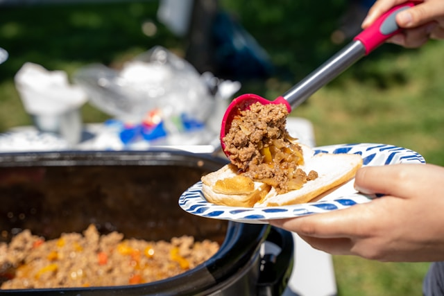

Sausage and Potatoes
I love this sloppy joes recipe because it's quick, messy, and delicious — just the way a comfort food should be! It's perfect for busy nights when you want something homemade but simple, and it always brings back memories of family dinners growing up.
Ingredients
- 1 pound ground beef
- 1/2 small onion, finely chopped
- 1/2 green bell pepper, chopped
- 3/4 cup ketchup
- 1 tablespoon brown sugar
- 1 tablespoon Worcestershire sauce
- 1 teaspoon mustard
- Salt and pepper to taste
- Hamburger buns
Instructions
- In a large skillet over medium heat, cook the ground beef until browned. Drain any excess grease.
- Stir in the chopped onion and bell pepper. Cook for about 3-4 minutes, until softened.
- Stir in ketchup, brown sugar, Worcestershire sauce, mustard, salt, and pepper. Mix well and simmer for 10 minutes, allowing the flavors to blend and the sauce to thicken slightly.
- Spoon the meat mixture onto hamburger buns and serve warm.